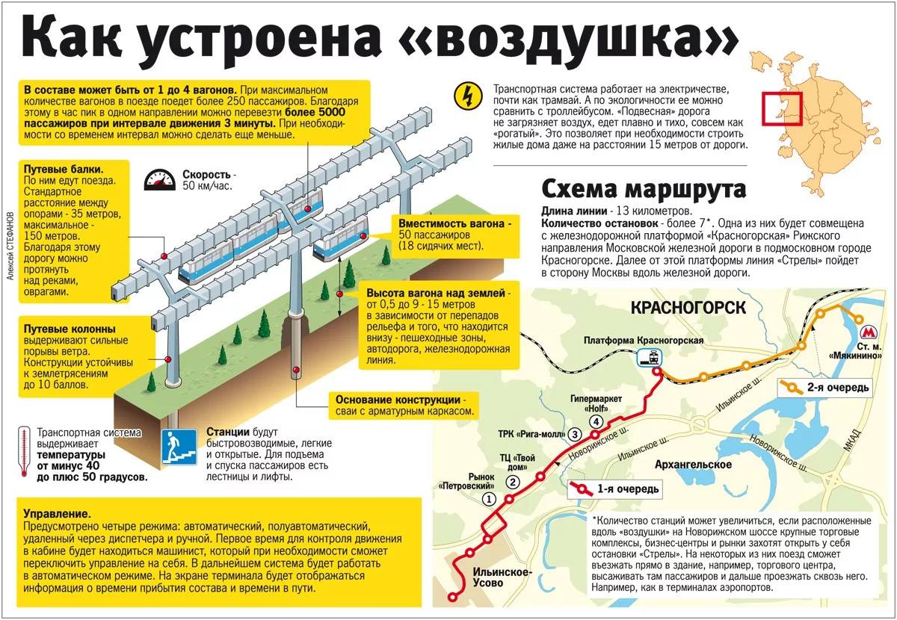
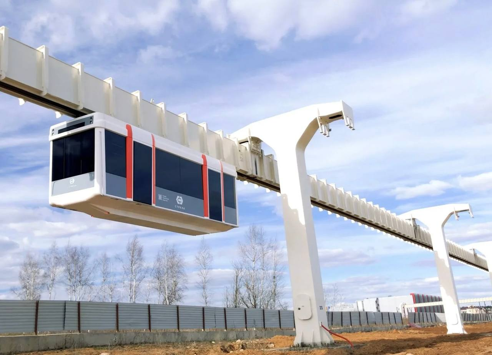
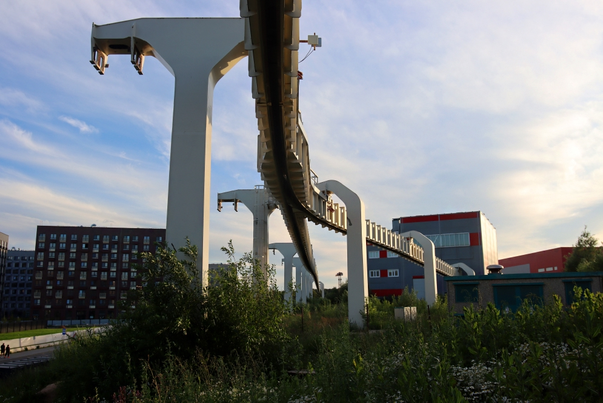
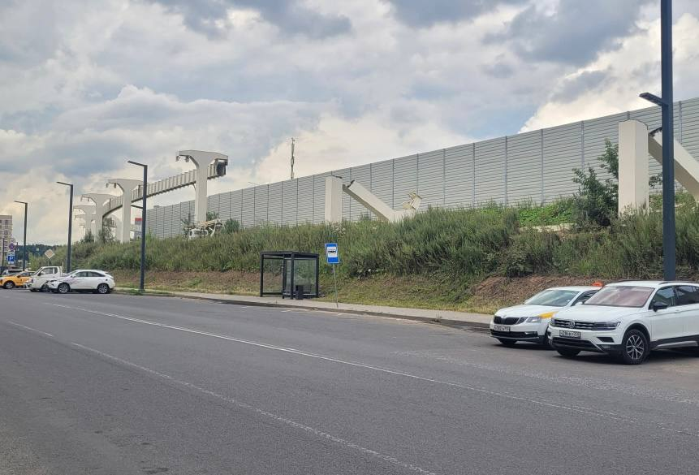

Монорельсовая система «Стрела»
«Стрела» — проект надземного пассажирского транспорта в посёлке Ильинское-Усово (ныне в составе городского округа Красногорск). Запущен компанией «Мортон» в январе 2016 года для транспортного обслуживания новых микрорайонов.
Систему планировалось построить от района «Новорижские кварталы» до станции метро «Мякинино» Арбатско-Покровской линии. Проект так и не был реализован — построен только 920-метровый испытательный участок, который простоял 10 лет и был почти полностью снесён.
Общая информация
| Параметр | Значение |
|---|---|
| Название | НТС «Стрела» (надземная транспортная система) |
| Тип | Подвесной монорельс (H-Bahn / Hängebahn) |
| Заказчик | Строительная компания «Мортон» (с 2016 — ГК «ПИК») |
| Место | Посёлок Ильинское-Усово, г.о. Красногорск, Московская область |
| Планируемый маршрут | «Новорижские кварталы» → метро «Мякинино» |
| Длина линии (проект) | 13 км |
| Количество станций (проект) | 7 (одна совмещена с платформой «Красногорская») |
| Построенный участок | 920 м испытательного пути + 80 м ответвление в депо |
| Подвижной состав | 1 испытательный вагон (по разным данным — Германия или СПб) |
| Текущее состояние | Заброшен, почти полностью снесён |
История проекта
Презентация проекта
Компания «Мортон» презентовала систему надземного пассажирского транспорта «Стрела». Планировалось построить линию от района «Новорижские кварталы» до Павшинской поймы к станции метро «Мякинино».
Постройка испытательного участка
Построен испытательный путь длиной 920 м, ответвление в депо длиной 80 м и само депо. В депо поступил единственный испытательный вагон и оборудование к нему.
Смена собственника
Компания «Мортон» выкуплена группой компаний «ПИК». Новые собственники не выразили заинтересованности в развитии проекта. Жилой микрорайон сменил название на «Ильинские Луга».
Проект заморожен
Сначала линию хотели провести до станции метро «Тушинская», но Москва была против. Затем решили проложить до «Мякинино» с первым пусковым участком до платформы «Красногорская». Дальше демонстрационного участка дело не пошло.
Решение о сносе
Принято решение о сносе недостроенного монорельса. Однако до дела так и не дошло в отличие от столичного, который начали активно сносить почти сразу после закрытия.
Реальный снос
Спустя 3 года после решения снос начался. Испытательный участок почти полностью снесён. «Надземных парков», как в Москве, на базе подмосковного монорельса строить никто не будет.
Технология H-Bahn
Технологическое решение «Стрелы» сильно отличается от московского монорельса с ездой поверху рельса. Здесь предполагалось использование современной технологии подвесного монорельса с расположением моторных тележек с упругими колёсами внутри путевой балки (система H-Bahn или Hängebahn).
🚝 Подвесной тип
- Моторные тележки внутри путевой балки
- Упругие колёса
- Ходовые части в полузамкнутом сечении
🌍 Мировые аналоги
- Дортмунд (Германия) — 3 км, 5 станций, с 1984 года
- Дюссельдорф (Германия) — 2,5 км, 3 станции, аэропорт, с 2002 года
- Вупперталь (Германия) — классика подвесного монорельса
Такое технологическое решение позволяет создать систему с минимальной эмиссией шума, низкой чувствительностью к погодным условиям и отсутствием пересечения с наземными видами транспорта.
Преимущества системы «Стрела»
По сравнению с другими транспортными системами НТС «Стрела» имеет ряд преимуществ:
1. Минимальное отчуждение земель
Для строительства дороги требуется минимальное отчуждение земель под установку опор путевой балки.
2. Сложный рельеф
Может быть проложена по местности со сложным рельефом и препятствиями: автодороги, ж/д пути, болота, реки, каналы, трубопроводы.
3. Узкая полоса отведения
Ширина полосы отведения — не более 9 м для двухпутного движения, что меньше, чем у трамвая.
4. Экологичность
Не загрязняет атмосферу выбросами вредных веществ.
5. Сохранение природы
Для постройки трассы не требуется асфальтировать газоны и вырубать кустарники.
6. Без ущерба лесопаркам
При прокладке через садово-парковые территории не наносит ущерба зелёным насаждениям и дорожной инфраструктуре.
7. Надёжность и безопасность
Конструкция исключает сход с путевой эстакады — ходовые части находятся внутри путевой балки полузамкнутого сечения.
8. Кратчайший путь
Возможность прокладки по кратчайшему пути без возведения мостов, насыпей, демонтажа строений и вырубки деревьев.
Вместимость: При использовании четырёхвагонных поездов вместимость превышает трёхсекционный трамвай, а пропускная способность значительно выше за счёт свободной полосы движения и автоматического режима.
Схема маршрута
📏 Длина линии
13 километров (по проекту)
🚉 Количество станций
Более 7 (одна совмещена с платформой «Красногорская»)
🏁 Конечные точки
«Новорижские кварталы» → метро «Мякинино»
1-я очередь
- Ильинское-Усово
- Рынок «Петровский»
- ТЦ «Твой дом»
- ТРК «Рига-молл»
- Платформа «Красногорская»
2-я очередь
- Гипермаркет «hoff»
- Станция метро «Мякинино»
Примечание: Количество станций может увеличиться, если расположенные вдоль «воздушки» на Новорижском шоссе крупные торговые комплексы, бизнес-центры и рынки захотят открыть у себя остановки «Стрелы». В дальнейшем система будет работать в автоматическом режиме. На экране терминала будет отображаться информация о времени прибытия состава и времени в пути.
Управление
Предусмотрено четыре режима управления:
1. Автоматический
Полностью без машиниста
2. Полуавтоматический
Частичное участие оператора
3. Удалённый
Через диспетчера
4. Ручной
Управление машинистом
Первое время для контроля движения в кабине будет находиться машинист, который при необходимости сможет переключить управление на себя. В дальнейшем система будет работать в автоматическом режиме.
Технические характеристики
Составность
От 1 до 4 вагонов
Вместимость вагона
50 пассажиров (18 сидячих мест)
Скорость
50 км/ч
Высота над землёй
От 5 до 15 м
Расстояние между опорами
35 м (стандарт), до 150 м (максимум)
Температурный режим
От −40 °C до +50 °C
Пассажиропоток
Более 5000 пассажиров в час в одном направлении
Интервал движения
3 минуты (может быть уменьшен)
Основание конструкции
Сваи с арматурным каркасом
Фотогалерея

НТС «Стрела».

На испытаниях.

Съезд в депо.

Процесс сноса.
Нажмите на фото для увеличения
«Стрела» — это проект, который мог стать прорывом в подмосковном транспорте. Подвесной монорельс по немецкой технологии, автоматическое управление, минимальное отчуждение земель — всё это было в проекте. Но смена собственника и отсутствие интереса к развитию поставили точку. Так он и стоит, зарастая бурьяном, напротив новеньких ПИКовских человейников».